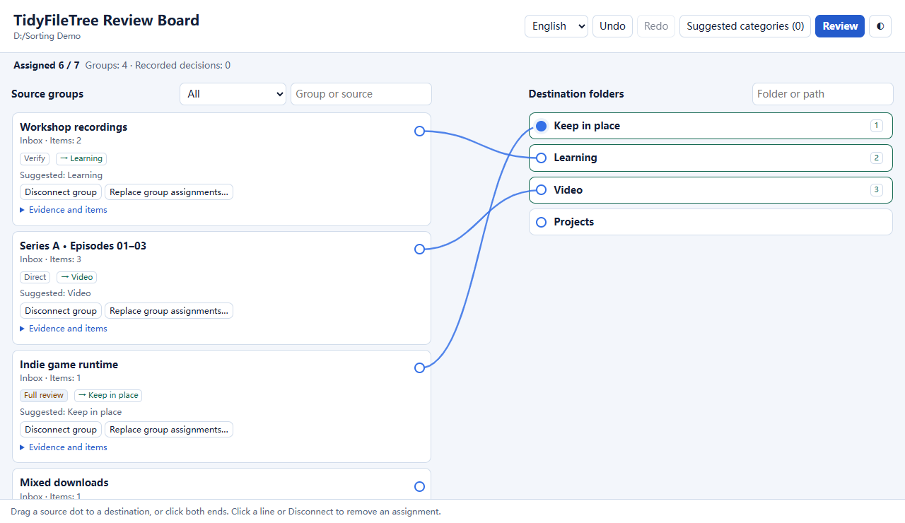

Install the command
Clone the repository and install from the checkout.
Terminal
git clone https://github.com/yeye45/tidy-file-tree.git
cd tidy-file-tree
python -m pip install .Use the folder structure to decide which files belong together. Assign groups on a visual board and preview your changes before moving anything.

Scan for structural and naming clues. An AI agent can use them to check episode sequences or identify software resources that should stay together.
Inspect the groups and evidence in your browser. Assign a whole group or one item to a folder, or choose Keep in place.
Download the actions table. Check each source and destination before applying the same receipt. The journal supports undo and recovery.
Use Python 3.9 or later. The sample lets you explore the board with fictional folders.
Clone the repository and install from the checkout.
git clone https://github.com/yeye45/tidy-file-tree.git
cd tidy-file-tree
python -m pip install .Run these commands from the checkout to try assigning groups.
$demoName = "tidy-file-tree-demo-" + [guid]::NewGuid()
$demo = New-Item -ItemType Directory -Path $demoName
python tests/make_fixture.py $demo.FullName
tidy-file-tree ui (Join-Path $demo.FullName "root") --lang en --open